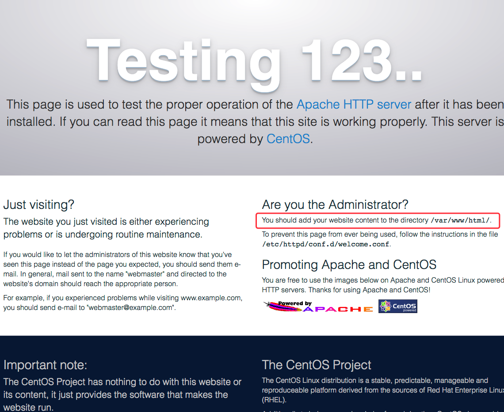
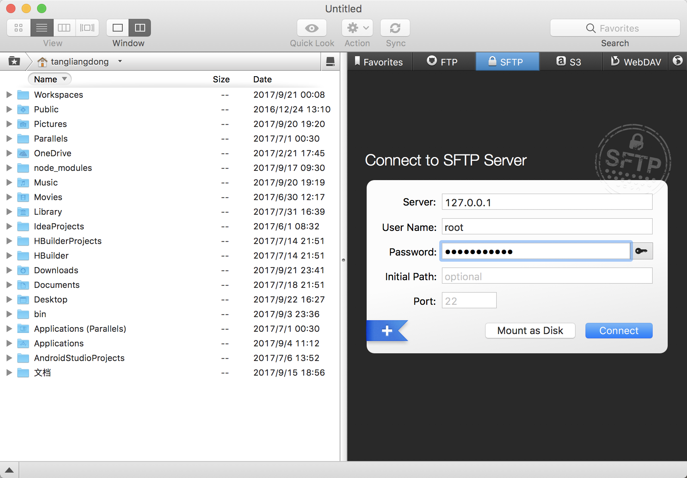

首先可以用本机的终端通过ssh远程登录主机
1 | ssh root@127.0.0.1 |
再输入 root 的登录密码
下载安装Apache
1 | yum install httpd |
安装成功后，操作Apache服务器的命令
1 | systemctl start httpd // 启动apache |
操作apache的命令依然可以使用service指令：
1 | [root@localhost ~]# service network restart |
但是系统会自动重定向该指令到新的指令 /bin/systemctl 来执行，并给出提示，因此直接使用 systemctl。
成功启动 Apache 以后，可以通过直接浏览器输入服务器的ip进行访问，如果出现下图的页面，说明 Apache 安装成功了。

上面写着推荐防止网页的内容的路径 /var/www/html/
配置Apache [httpd.conf]
Apache的配置文件在如下路径，直接打开编辑
1 | vim /etc/httpd/conf/httpd.conf |
httpd.conf 需要修改一些地方
1 | # line 86: 改变管理员的邮箱地址 |
配置WEB站点（可以绑定多个域名）
1 | # 开启虚拟主机并确定其监听的主机名与端口，* 表示省略，80为网页默认端口 |
ip的位置填写你服务器的ip地址
- Serveradmin —— 填写你的邮箱
- ServerName —— 主机名（域名或公网IP）
- ServerAlias —— 别名（二级域名或其他域名或IP）
- DocumentRoot —— 文件目录（表示将域名映射至该文件目录）
下载安装 VSFTP
我们可以用ftp工具直接通过拖拽的形式就能向服务器上传文件，很方便。
打开 vsftpd 的配置文件
1 | vim /etc/vsftpd/vsftpd.conf |
将配置文件中 anonymous_enable=YES 改为 anonymous_enable=NO
1 | # 取消如下配置前的注释符号： |
打开 /etc/vsftpd/user_list 将ftp的登录账号添加进去
1 | vim /etc/vsftpd/user_list |
操作 vsftpd 服务
1 | systemctl start vsftpd.service // 开启vsftpd 服务 |

启动vsftpd 服务后，就可以通过ftp客户端进行登录。
把我们的web站点上传到服务器的对应路径。
参考
本文部分摘录自以下博客，特别写出来，以表感谢。